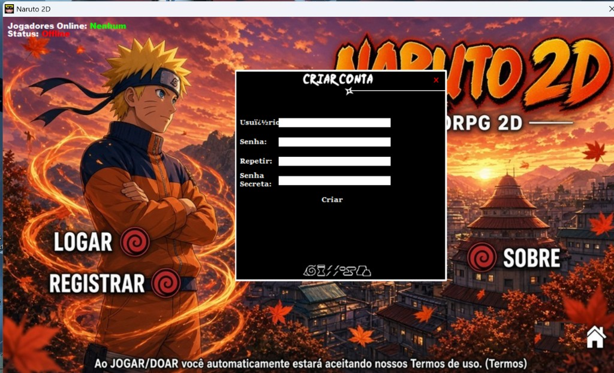

Explore o mundo ninja, complete missões, enfrente outros jogadores e torne-se um Hokage.
Donate
R$ 1,00 = 1 Cash
Cada real doado vira 1 Cash no jogo.
Explore o mundo ninja, complete missões, enfrente outros jogadores e torne-se um Hokage.
Donate
R$ 1,00 = 1 Cash
Cada real doado vira 1 Cash no jogo.
O jogo
Um MMORPG 2D focado em jutsus, PvP e missões — do primeiro passo até o título de Kage.
Aprenda técnicas, combine elementos e monte o kit que define seu estilo de luta.
Disputas intensas entre jogadores, com ranking, karma e reputação em jogo.
Complete quests, enfrente bosses e explore vilas pelo mapa do mundo.
Comece agora
Registre-se gratuitamente e prepare seu personagem.
Baixe o cliente e entre no servidor.
Siga o guia da wiki e comece sua jornada.
Leia o guia para iniciantes se for sua primeira vez no servidor.
Comunidade
Novidades, suporte e jogadores online — o hub da comunidade Naruto 2D.
Baixe o cliente e comece a jogar — ou explore a wiki enquanto isso.

A conta é criada dentro do cliente do jogo, na tela de registro.
Baixe o jogo, abra o launcher e use a opção Registrar / Criar Conta.